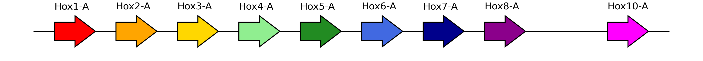
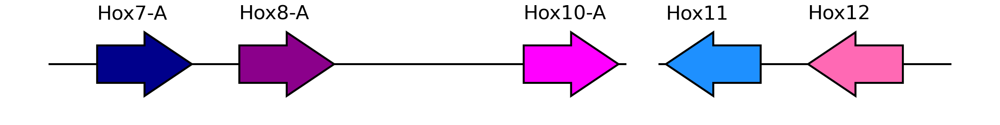

gff = util.read_gff(os.environ["EXAMPLE_DATA_PATH"] + "plit.gff3")
util.decorate(gff, attributes={"gene_id": "ID", "gene_name": "gene"})
hox_genes = [
"PB.8615",
"g9718",
"PB.8616",
"g9720",
"g9721",
"PB.8617",
"g9723",
"g9724",
"g9725",
]
keep = gff["gene_id"].isin(hox_genes)
hox = gff[keep].reset_index(drop=True)core
The plotting functions
Before we get started with plotting, we should read in some toy data. This is a modified excerpt from the P. litorale genome annotation, specifically the part that holds the Hox gene cluster.
plot_synteny
plot_synteny (gff, block_start:int=None, block_end:int=None, figsize:(<class'float'>,<class'float'>)=None, locus_start:str='start', locus_end:str='end', molecule:str='seqid', locus_name:str='gene_name', fig_title:str=None, save:str|pathlib.Path='synteny.svg', palette:dict|None={'aliceblue': '#F0F8FF', 'antiquewhite': '#FAEBD7', 'aqua': '#00FFFF', 'aquamarine': '#7FFFD4', 'azure': '#F0FFFF', 'beige': '#F5F5DC', 'bisque': '#FFE4C4', 'black': '#000000', 'blanchedalmond': '#FFEBCD', 'blue': '#0000FF', 'blueviolet': '#8A2BE2', 'brown': '#A52A2A', 'burlywood': '#DEB887', 'cadetblue': '#5F9EA0', 'chartreuse': '#7FFF00', 'chocolate': '#D2691E', 'coral': '#FF7F50', 'cornflowerblue': '#6495ED', 'cornsilk': '#FFF8DC', 'crimson': '#DC143C', 'cyan': '#00FFFF', 'darkblue': '#00008B', 'darkcyan': '#008B8B', 'darkgoldenrod': '#B8860B', 'darkgray': '#A9A9A9', 'darkgreen': '#006400', 'darkgrey': '#A9A9A9', 'darkkhaki': '#BDB76B', 'darkmagenta': '#8B008B', 'darkolivegreen': '#556B2F', 'darkorange': '#FF8C00', 'darkorchid': '#9932CC', 'darkred': '#8B0000', 'darksalmon': '#E9967A', 'darkseagreen': '#8FBC8F', 'darkslateblue': '#483D8B', 'darkslategray': '#2F4F4F', 'darkslategrey': '#2F4F4F', 'darkturquoise': '#00CED1', 'darkviolet': '#9400D3', 'deeppink': '#FF1493', 'deepskyblue': '#00BFFF', 'dimgray': '#696969', 'dimgrey': '#696969', 'dodgerblue': '#1E90FF', 'firebrick': '#B22222', 'floralwhite': '#FFFAF0', 'forestgreen': '#228B22', 'fuchsia': '#FF00FF', 'gainsboro': '#DCDCDC', 'ghostwhite': '#F8F8FF', 'gold': '#FFD700', 'goldenrod': '#DAA520', 'gray': '#808080', 'green': '#008000', 'greenyellow': '#ADFF2F', 'grey': '#808080', 'honeydew': '#F0FFF0', 'hotpink': '#FF69B4', 'indianred': '#CD5C5C', 'indigo': '#4B0082', 'ivory': '#FFFFF0', 'khaki': '#F0E68C', 'lavender': '#E6E6FA', 'lavenderblush': '#FFF0F5', 'lawngreen': '#7CFC00', 'lemonchiffon': '#FFFACD', 'lightblue': '#ADD8E6', 'lightcoral': '#F08080', 'lightcyan': '#E0FFFF', 'lightgoldenrodyellow': '#FAFAD2', 'lightgray': '#D3D3D3', 'lightgreen': '#90EE90', 'lightgrey': '#D3D3D3', 'lightpink': '#FFB6C1', 'lightsalmon': '#FFA07A', 'lightseagreen': '#20B2AA', 'lightskyblue': '#87CEFA', 'lightslategray': '#778899', 'lightslategrey': '#778899', 'lightsteelblue': '#B0C4DE', 'lightyellow': '#FFFFE0', 'lime': '#00FF00', 'limegreen': '#32CD32', 'linen': '#FAF0E6', 'magenta': '#FF00FF', 'maroon': '#800000', 'mediumaquamarine': '#66CDAA', 'mediumblue': '#0000CD', 'mediumorchid': '#BA55D3', 'mediumpurple': '#9370DB', 'mediumseagreen': '#3CB371', 'mediumslateblue': '#7B68EE', 'mediumspringgreen': '#00FA9A', 'mediumturquoise': '#48D1CC', 'mediumvioletred': '#C71585', 'midnightblue': '#191970', 'mintcream': '#F5FFFA', 'mistyrose': '#FFE4E1', 'moccasin': '#FFE4B5', 'navajowhite': '#FFDEAD', 'navy': '#000080', 'oldlace': '#FDF5E6', 'olive': '#808000', 'olivedrab': '#6B8E23', 'orange': '#FFA500', 'orangered': '#FF4500', 'orchid': '#DA70D6', 'palegoldenrod': '#EEE8AA', 'palegreen': '#98FB98', 'paleturquoise': '#AFEEEE', 'palevioletred': '#DB7093', 'papayawhip': '#FFEFD5', 'peachpuff': '#FFDAB9', 'peru': '#CD853F', 'pink': '#FFC0CB', 'plum': '#DDA0DD', 'powderblue': '#B0E0E6', 'purple': '#800080', 'rebeccapurple': '#663399', 'red': '#FF0000', 'rosybrown': '#BC8F8F', 'royalblue': '#4169E1', 'saddlebrown': '#8B4513', 'salmon': '#FA8072', 'sandybrown': '#F4A460', 'seagreen': '#2E8B57', 'seashell': '#FFF5EE', 'sienna': '#A0522D', 'silver': '#C0C0C0', 'skyblue': '#87CEEB', 'slateblue': '#6A5ACD', 'slategray': '#708090', 'slategrey': '#708090', 'snow': '#FFFAFA', 'springgreen': '#00FF7F', 'steelblue': '#4682B4', 'tan': '#D2B48C', 'teal': '#008080', 'thistle': '#D8BFD8', 'tomato': '#FF6347', 'turquoise': '#40E0D0', 'violet': '#EE82EE', 'wheat': '#F5DEB3', 'white': '#FFFFFF', 'whitesmoke': '#F5F5F5', 'yellow': '#FFFF00', 'yellowgreen': '#9ACD32'}, chromosome_color:str='lightgray', backup_gene_color:str='darkgray', gene_name_offset:float=0.02, chromosome_width:float=1, gene_width:float=5)
Function to plot a syntenic cluster of genes.
| Type | Default | Details | |
|---|---|---|---|
| gff | a GFF in Pandas dataframe form. Only includes the genes of the syntenic block in question. | ||
| block_start | int | None | The start coordinate of the syntenic locus to plot. If None, will be set to the start of the first gene minus 5% of the block length. |
| block_end | int | None | The end coordinate of the syntenic locus to plot. If None, will be set to the end of the last gene plus 5% of the block length. |
| figsize | (<class ‘float’>, <class ‘float’>) | None | the figure size. |
| locus_start | str | start | the GFF column that describes the start coordinate of the entities (e.g. gene, mRNA) to be plotted on the chromosome. In a well-behaved GFF, this should be “start”. |
| locus_end | str | end | the GFF column that describes the end coordinate of the entities (e.g. gene, mRNA) to be plotted on the chromosome. In a well-behaved GFF, this should be “end”. |
| molecule | str | seqid | the GFF column that holds the molecule name (chromosome/scaffold/contig ID). In a well-behaved GFF, this should be “seqid”. |
| locus_name | str | gene_name | the GFF column that holds the gene/mRNA symbol. This is usually a tag in the “attributes” column of a well-behaved GFF and should have been extracted prior to this step. It will be plotted according to the gene_name_offset parameter. |
| fig_title | str | None | Figure title. |
| save | str | pathlib.Path | synteny.svg | path to save an SVG image. |
| palette | dict | None | {‘aliceblue’: ‘#F0F8FF’, ‘antiquewhite’: ‘#FAEBD7’, ‘aqua’: ‘#00FFFF’, ‘aquamarine’: ‘#7FFFD4’, ‘azure’: ‘#F0FFFF’, ‘beige’: ‘#F5F5DC’, ‘bisque’: ‘#FFE4C4’, ‘black’: ‘#000000’, ‘blanchedalmond’: ‘#FFEBCD’, ‘blue’: ‘#0000FF’, ‘blueviolet’: ‘#8A2BE2’, ‘brown’: ‘#A52A2A’, ‘burlywood’: ‘#DEB887’, ‘cadetblue’: ‘#5F9EA0’, ‘chartreuse’: ‘#7FFF00’, ‘chocolate’: ‘#D2691E’, ‘coral’: ‘#FF7F50’, ‘cornflowerblue’: ‘#6495ED’, ‘cornsilk’: ‘#FFF8DC’, ‘crimson’: ‘#DC143C’, ‘cyan’: ‘#00FFFF’, ‘darkblue’: ‘#00008B’, ‘darkcyan’: ‘#008B8B’, ‘darkgoldenrod’: ‘#B8860B’, ‘darkgray’: ‘#A9A9A9’, ‘darkgreen’: ‘#006400’, ‘darkgrey’: ‘#A9A9A9’, ‘darkkhaki’: ‘#BDB76B’, ‘darkmagenta’: ‘#8B008B’, ‘darkolivegreen’: ‘#556B2F’, ‘darkorange’: ‘#FF8C00’, ‘darkorchid’: ‘#9932CC’, ‘darkred’: ‘#8B0000’, ‘darksalmon’: ‘#E9967A’, ‘darkseagreen’: ‘#8FBC8F’, ‘darkslateblue’: ‘#483D8B’, ‘darkslategray’: ‘#2F4F4F’, ‘darkslategrey’: ‘#2F4F4F’, ‘darkturquoise’: ‘#00CED1’, ‘darkviolet’: ‘#9400D3’, ‘deeppink’: ‘#FF1493’, ‘deepskyblue’: ‘#00BFFF’, ‘dimgray’: ‘#696969’, ‘dimgrey’: ‘#696969’, ‘dodgerblue’: ‘#1E90FF’, ‘firebrick’: ‘#B22222’, ‘floralwhite’: ‘#FFFAF0’, ‘forestgreen’: ‘#228B22’, ‘fuchsia’: ‘#FF00FF’, ‘gainsboro’: ‘#DCDCDC’, ‘ghostwhite’: ‘#F8F8FF’, ‘gold’: ‘#FFD700’, ‘goldenrod’: ‘#DAA520’, ‘gray’: ‘#808080’, ‘green’: ‘#008000’, ‘greenyellow’: ‘#ADFF2F’, ‘grey’: ‘#808080’, ‘honeydew’: ‘#F0FFF0’, ‘hotpink’: ‘#FF69B4’, ‘indianred’: ‘#CD5C5C’, ‘indigo’: ‘#4B0082’, ‘ivory’: ‘#FFFFF0’, ‘khaki’: ‘#F0E68C’, ‘lavender’: ‘#E6E6FA’, ‘lavenderblush’: ‘#FFF0F5’, ‘lawngreen’: ‘#7CFC00’, ‘lemonchiffon’: ‘#FFFACD’, ‘lightblue’: ‘#ADD8E6’, ‘lightcoral’: ‘#F08080’, ‘lightcyan’: ‘#E0FFFF’, ‘lightgoldenrodyellow’: ‘#FAFAD2’, ‘lightgray’: ‘#D3D3D3’, ‘lightgreen’: ‘#90EE90’, ‘lightgrey’: ‘#D3D3D3’, ‘lightpink’: ‘#FFB6C1’, ‘lightsalmon’: ‘#FFA07A’, ‘lightseagreen’: ‘#20B2AA’, ‘lightskyblue’: ‘#87CEFA’, ‘lightslategray’: ‘#778899’, ‘lightslategrey’: ‘#778899’, ‘lightsteelblue’: ‘#B0C4DE’, ‘lightyellow’: ‘#FFFFE0’, ‘lime’: ‘#00FF00’, ‘limegreen’: ‘#32CD32’, ‘linen’: ‘#FAF0E6’, ‘magenta’: ‘#FF00FF’, ‘maroon’: ‘#800000’, ‘mediumaquamarine’: ‘#66CDAA’, ‘mediumblue’: ‘#0000CD’, ‘mediumorchid’: ‘#BA55D3’, ‘mediumpurple’: ‘#9370DB’, ‘mediumseagreen’: ‘#3CB371’, ‘mediumslateblue’: ‘#7B68EE’, ‘mediumspringgreen’: ‘#00FA9A’, ‘mediumturquoise’: ‘#48D1CC’, ‘mediumvioletred’: ‘#C71585’, ‘midnightblue’: ‘#191970’, ‘mintcream’: ‘#F5FFFA’, ‘mistyrose’: ‘#FFE4E1’, ‘moccasin’: ‘#FFE4B5’, ‘navajowhite’: ‘#FFDEAD’, ‘navy’: ‘#000080’, ‘oldlace’: ‘#FDF5E6’, ‘olive’: ‘#808000’, ‘olivedrab’: ‘#6B8E23’, ‘orange’: ‘#FFA500’, ‘orangered’: ‘#FF4500’, ‘orchid’: ‘#DA70D6’, ‘palegoldenrod’: ‘#EEE8AA’, ‘palegreen’: ‘#98FB98’, ‘paleturquoise’: ‘#AFEEEE’, ‘palevioletred’: ‘#DB7093’, ‘papayawhip’: ‘#FFEFD5’, ‘peachpuff’: ‘#FFDAB9’, ‘peru’: ‘#CD853F’, ‘pink’: ‘#FFC0CB’, ‘plum’: ‘#DDA0DD’, ‘powderblue’: ‘#B0E0E6’, ‘purple’: ‘#800080’, ‘rebeccapurple’: ‘#663399’, ‘red’: ‘#FF0000’, ‘rosybrown’: ‘#BC8F8F’, ‘royalblue’: ‘#4169E1’, ‘saddlebrown’: ‘#8B4513’, ‘salmon’: ‘#FA8072’, ‘sandybrown’: ‘#F4A460’, ‘seagreen’: ‘#2E8B57’, ‘seashell’: ‘#FFF5EE’, ‘sienna’: ‘#A0522D’, ‘silver’: ‘#C0C0C0’, ‘skyblue’: ‘#87CEEB’, ‘slateblue’: ‘#6A5ACD’, ‘slategray’: ‘#708090’, ‘slategrey’: ‘#708090’, ‘snow’: ‘#FFFAFA’, ‘springgreen’: ‘#00FF7F’, ‘steelblue’: ‘#4682B4’, ‘tan’: ‘#D2B48C’, ‘teal’: ‘#008080’, ‘thistle’: ‘#D8BFD8’, ‘tomato’: ‘#FF6347’, ‘turquoise’: ‘#40E0D0’, ‘violet’: ‘#EE82EE’, ‘wheat’: ‘#F5DEB3’, ‘white’: ‘#FFFFFF’, ‘whitesmoke’: ‘#F5F5F5’, ‘yellow’: ‘#FFFF00’, ‘yellowgreen’: ‘#9ACD32’} | |
| chromosome_color | str | lightgray | the color of the line representing the molecule the genes are plotted on. |
| backup_gene_color | str | darkgray | If the GFF has no column titled “color”, the gene arrows will be filled using this color. |
| gene_name_offset | float | 0.02 | Default offset for plotting gene names if the GFF has no column titled “offset”. |
| chromosome_width | float | 1 | Linewidth parameter for the line representing the chromosome. |
| gene_width | float | 5 | Width of the arrow patches representing genes. Please refer to the documentation of matplotlib.pyplot.arrow for more details. |
| Returns | None |
We can use this function with any GFF dataframe that is reduced to one row per gene (for example a type: gene or type: mRNA entry per gene).
plot_synteny(hox, figsize=(11, 2))If the input GFF contains information about the color and the gene name offsets, the plotter will use them:
hox["color"] = [
"red",
"orange",
"gold",
"lightgreen",
"forestgreen",
"royalblue",
"darkblue",
"darkmagenta",
"magenta",
]
hox["offset"] = [0.02, -0.025, 0.02, 0.02, 0.02, -0.025, 0.02, 0.02, 0.02]plot_synteny(hox, figsize=(11, 2))
hox["strand"] = ["+", "-", "+", "-", "-", "-", "+", "+", "+"]
plot_synteny(hox, figsize=(11, 2))
We can also use hex codes directly for coloring:
hox["color"] = [
"#E7DAD2",
"#CFE2B7",
"#FA7F6F",
"#83B0D2",
"#BEB9DC",
"#C0E59A",
"#8ECFC9",
"#FFBE79",
"#BAAC8C",
]plot_synteny(hox, figsize=(11, 2), palette=None)plot_synteny_schematic
plot_synteny_schematic (gff:pandas.core.frame.DataFrame, block_gene:float=400, block_dist:float=200, locus_start:str='start', locus_end:str='end', molecule:str='seqid', locus_name:str='gene_name', interrupted:bool=False, palette:dict|None={'aliceblue': '#F0F8FF', 'antiquewhite': '#FAEBD7', 'aqua': '#00FFFF', 'aquamarine': '#7FFFD4', 'azure': '#F0FFFF', 'beige': '#F5F5DC', 'bisque': '#FFE4C4', 'black': '#000000', 'blanchedalmond': '#FFEBCD', 'blue': '#0000FF', 'blueviolet': '#8A2BE2', 'brown': '#A52A2A', 'burlywood': '#DEB887', 'cadetblue': '#5F9EA0', 'chartreuse': '#7FFF00', 'chocolate': '#D2691E', 'coral': '#FF7F50', 'cornflowerblue': '#6495ED', 'cornsilk': '#FFF8DC', 'crimson': '#DC143C', 'cyan': '#00FFFF', 'darkblue': '#00008B', 'darkcyan': '#008B8B', 'darkgoldenrod': '#B8860B', 'darkgray': '#A9A9A9', 'darkgreen': '#006400', 'darkgrey': '#A9A9A9', 'darkkhaki': '#BDB76B', 'darkmagenta': '#8B008B', 'darkolivegreen': '#556B2F', 'darkorange': '#FF8C00', 'darkorchid': '#9932CC', 'darkred': '#8B0000', 'darksalmon': '#E9967A', 'darkseagreen': '#8FBC8F', 'darkslateblue': '#483D8B', 'darkslategray': '#2F4F4F', 'darkslategrey': '#2F4F4F', 'darkturquoise': '#00CED1', 'darkviolet': '#9400D3', 'deeppink': '#FF1493', 'deepskyblue': '#00BFFF', 'dimgray': '#696969', 'dimgrey': '#696969', 'dodgerblue': '#1E90FF', 'firebrick': '#B22222', 'floralwhite': '#FFFAF0', 'forestgreen': '#228B22', 'fuchsia': '#FF00FF', 'gainsboro': '#DCDCDC', 'ghostwhite': '#F8F8FF', 'gold': '#FFD700', 'goldenrod': '#DAA520', 'gray': '#808080', 'green': '#008000', 'greenyellow': '#ADFF2F', 'grey': '#808080', 'honeydew': '#F0FFF0', 'hotpink': '#FF69B4', 'indianred': '#CD5C5C', 'indigo': '#4B0082', 'ivory': '#FFFFF0', 'khaki': '#F0E68C', 'lavender': '#E6E6FA', 'lavenderblush': '#FFF0F5', 'lawngreen': '#7CFC00', 'lemonchiffon': '#FFFACD', 'lightblue': '#ADD8E6', 'lightcoral': '#F08080', 'lightcyan': '#E0FFFF', 'lightgoldenrodyellow': '#FAFAD2', 'lightgray': '#D3D3D3', 'lightgreen': '#90EE90', 'lightgrey': '#D3D3D3', 'lightpink': '#FFB6C1', 'lightsalmon': '#FFA07A', 'lightseagreen': '#20B2AA', 'lightskyblue': '#87CEFA', 'lightslategray': '#778899', 'lightslategrey': '#778899', 'lightsteelblue': '#B0C4DE', 'lightyellow': '#FFFFE0', 'lime': '#00FF00', 'limegreen': '#32CD32', 'linen': '#FAF0E6', 'magenta': '#FF00FF', 'maroon': '#800000', 'mediumaquamarine': '#66CDAA', 'mediumblue': '#0000CD', 'mediumorchid': '#BA55D3', 'mediumpurple': '#9370DB', 'mediumseagreen': '#3CB371', 'mediumslateblue': '#7B68EE', 'mediumspringgreen': '#00FA9A', 'mediumturquoise': '#48D1CC', 'mediumvioletred': '#C71585', 'midnightblue': '#191970', 'mintcream': '#F5FFFA', 'mistyrose': '#FFE4E1', 'moccasin': '#FFE4B5', 'navajowhite': '#FFDEAD', 'navy': '#000080', 'oldlace': '#FDF5E6', 'olive': '#808000', 'olivedrab': '#6B8E23', 'orange': '#FFA500', 'orangered': '#FF4500', 'orchid': '#DA70D6', 'palegoldenrod': '#EEE8AA', 'palegreen': '#98FB98', 'paleturquoise': '#AFEEEE', 'palevioletred': '#DB7093', 'papayawhip': '#FFEFD5', 'peachpuff': '#FFDAB9', 'peru': '#CD853F', 'pink': '#FFC0CB', 'plum': '#DDA0DD', 'powderblue': '#B0E0E6', 'purple': '#800080', 'rebeccapurple': '#663399', 'red': '#FF0000', 'rosybrown': '#BC8F8F', 'royalblue': '#4169E1', 'saddlebrown': '#8B4513', 'salmon': '#FA8072', 'sandybrown': '#F4A460', 'seagreen': '#2E8B57', 'seashell': '#FFF5EE', 'sienna': '#A0522D', 'silver': '#C0C0C0', 'skyblue': '#87CEEB', 'slateblue': '#6A5ACD', 'slategray': '#708090', 'slategrey': '#708090', 'snow': '#FFFAFA', 'springgreen': '#00FF7F', 'steelblue': '#4682B4', 'tan': '#D2B48C', 'teal': '#008080', 'thistle': '#D8BFD8', 'tomato': '#FF6347', 'turquoise': '#40E0D0', 'violet': '#EE82EE', 'wheat': '#F5DEB3', 'white': '#FFFFFF', 'whitesmoke': '#F5F5F5', 'yellow': '#FFFF00', 'yellowgreen': '#9ACD32'}, fontsize:int=30, chromosome_color:str='black', backup_gene_color:str='darkgray', gene_name_offset:float=0.02, chromosome_width:float=3, head_length:float=200, head_width:float=1.7, gene_width:float=1, ax:matplotlib.axes._axes.Axes=None, figsize:(<class'float'>,<class'float'>)=None, save:str|pathlib.Path='schematic.svg', return_fig:bool=False)
| Type | Default | Details | |
|---|---|---|---|
| gff | DataFrame | a GFF in Pandas dataframe form. Only includes the genes of the syntenic block in question. Assumed to be sorted in plotting order. | |
| block_gene | float | 400 | length of a gene arrow, in plot coordinate space. |
| block_dist | float | 200 | length of gap between successive genes, in plot coordinate space. |
| locus_start | str | start | the GFF column that describes the start coordinate of the entities (e.g. gene, mRNA) to be plotted on the chromosome. In a well-behaved GFF, this should be “start”. |
| locus_end | str | end | the GFF column that describes the end coordinate of the entities (e.g. gene, mRNA) to be plotted on the chromosome. In a well-behaved GFF, this should be “end”. |
| molecule | str | seqid | the GFF column that holds the molecule name (chromosome/scaffold/contig ID). In a well-behaved GFF, this should be “seqid”. |
| locus_name | str | gene_name | the GFF column that holds the gene/mRNA symbol. This is usually a tag in the “attributes” column of a well-behaved GFF and should have been extracted prior to this step. It will be plotted according to the gene_name_offset parameter. |
| interrupted | bool | False | is the syntenic cluster on multiple pseudomolecules? |
| palette | dict | None | {‘aliceblue’: ‘#F0F8FF’, ‘antiquewhite’: ‘#FAEBD7’, ‘aqua’: ‘#00FFFF’, ‘aquamarine’: ‘#7FFFD4’, ‘azure’: ‘#F0FFFF’, ‘beige’: ‘#F5F5DC’, ‘bisque’: ‘#FFE4C4’, ‘black’: ‘#000000’, ‘blanchedalmond’: ‘#FFEBCD’, ‘blue’: ‘#0000FF’, ‘blueviolet’: ‘#8A2BE2’, ‘brown’: ‘#A52A2A’, ‘burlywood’: ‘#DEB887’, ‘cadetblue’: ‘#5F9EA0’, ‘chartreuse’: ‘#7FFF00’, ‘chocolate’: ‘#D2691E’, ‘coral’: ‘#FF7F50’, ‘cornflowerblue’: ‘#6495ED’, ‘cornsilk’: ‘#FFF8DC’, ‘crimson’: ‘#DC143C’, ‘cyan’: ‘#00FFFF’, ‘darkblue’: ‘#00008B’, ‘darkcyan’: ‘#008B8B’, ‘darkgoldenrod’: ‘#B8860B’, ‘darkgray’: ‘#A9A9A9’, ‘darkgreen’: ‘#006400’, ‘darkgrey’: ‘#A9A9A9’, ‘darkkhaki’: ‘#BDB76B’, ‘darkmagenta’: ‘#8B008B’, ‘darkolivegreen’: ‘#556B2F’, ‘darkorange’: ‘#FF8C00’, ‘darkorchid’: ‘#9932CC’, ‘darkred’: ‘#8B0000’, ‘darksalmon’: ‘#E9967A’, ‘darkseagreen’: ‘#8FBC8F’, ‘darkslateblue’: ‘#483D8B’, ‘darkslategray’: ‘#2F4F4F’, ‘darkslategrey’: ‘#2F4F4F’, ‘darkturquoise’: ‘#00CED1’, ‘darkviolet’: ‘#9400D3’, ‘deeppink’: ‘#FF1493’, ‘deepskyblue’: ‘#00BFFF’, ‘dimgray’: ‘#696969’, ‘dimgrey’: ‘#696969’, ‘dodgerblue’: ‘#1E90FF’, ‘firebrick’: ‘#B22222’, ‘floralwhite’: ‘#FFFAF0’, ‘forestgreen’: ‘#228B22’, ‘fuchsia’: ‘#FF00FF’, ‘gainsboro’: ‘#DCDCDC’, ‘ghostwhite’: ‘#F8F8FF’, ‘gold’: ‘#FFD700’, ‘goldenrod’: ‘#DAA520’, ‘gray’: ‘#808080’, ‘green’: ‘#008000’, ‘greenyellow’: ‘#ADFF2F’, ‘grey’: ‘#808080’, ‘honeydew’: ‘#F0FFF0’, ‘hotpink’: ‘#FF69B4’, ‘indianred’: ‘#CD5C5C’, ‘indigo’: ‘#4B0082’, ‘ivory’: ‘#FFFFF0’, ‘khaki’: ‘#F0E68C’, ‘lavender’: ‘#E6E6FA’, ‘lavenderblush’: ‘#FFF0F5’, ‘lawngreen’: ‘#7CFC00’, ‘lemonchiffon’: ‘#FFFACD’, ‘lightblue’: ‘#ADD8E6’, ‘lightcoral’: ‘#F08080’, ‘lightcyan’: ‘#E0FFFF’, ‘lightgoldenrodyellow’: ‘#FAFAD2’, ‘lightgray’: ‘#D3D3D3’, ‘lightgreen’: ‘#90EE90’, ‘lightgrey’: ‘#D3D3D3’, ‘lightpink’: ‘#FFB6C1’, ‘lightsalmon’: ‘#FFA07A’, ‘lightseagreen’: ‘#20B2AA’, ‘lightskyblue’: ‘#87CEFA’, ‘lightslategray’: ‘#778899’, ‘lightslategrey’: ‘#778899’, ‘lightsteelblue’: ‘#B0C4DE’, ‘lightyellow’: ‘#FFFFE0’, ‘lime’: ‘#00FF00’, ‘limegreen’: ‘#32CD32’, ‘linen’: ‘#FAF0E6’, ‘magenta’: ‘#FF00FF’, ‘maroon’: ‘#800000’, ‘mediumaquamarine’: ‘#66CDAA’, ‘mediumblue’: ‘#0000CD’, ‘mediumorchid’: ‘#BA55D3’, ‘mediumpurple’: ‘#9370DB’, ‘mediumseagreen’: ‘#3CB371’, ‘mediumslateblue’: ‘#7B68EE’, ‘mediumspringgreen’: ‘#00FA9A’, ‘mediumturquoise’: ‘#48D1CC’, ‘mediumvioletred’: ‘#C71585’, ‘midnightblue’: ‘#191970’, ‘mintcream’: ‘#F5FFFA’, ‘mistyrose’: ‘#FFE4E1’, ‘moccasin’: ‘#FFE4B5’, ‘navajowhite’: ‘#FFDEAD’, ‘navy’: ‘#000080’, ‘oldlace’: ‘#FDF5E6’, ‘olive’: ‘#808000’, ‘olivedrab’: ‘#6B8E23’, ‘orange’: ‘#FFA500’, ‘orangered’: ‘#FF4500’, ‘orchid’: ‘#DA70D6’, ‘palegoldenrod’: ‘#EEE8AA’, ‘palegreen’: ‘#98FB98’, ‘paleturquoise’: ‘#AFEEEE’, ‘palevioletred’: ‘#DB7093’, ‘papayawhip’: ‘#FFEFD5’, ‘peachpuff’: ‘#FFDAB9’, ‘peru’: ‘#CD853F’, ‘pink’: ‘#FFC0CB’, ‘plum’: ‘#DDA0DD’, ‘powderblue’: ‘#B0E0E6’, ‘purple’: ‘#800080’, ‘rebeccapurple’: ‘#663399’, ‘red’: ‘#FF0000’, ‘rosybrown’: ‘#BC8F8F’, ‘royalblue’: ‘#4169E1’, ‘saddlebrown’: ‘#8B4513’, ‘salmon’: ‘#FA8072’, ‘sandybrown’: ‘#F4A460’, ‘seagreen’: ‘#2E8B57’, ‘seashell’: ‘#FFF5EE’, ‘sienna’: ‘#A0522D’, ‘silver’: ‘#C0C0C0’, ‘skyblue’: ‘#87CEEB’, ‘slateblue’: ‘#6A5ACD’, ‘slategray’: ‘#708090’, ‘slategrey’: ‘#708090’, ‘snow’: ‘#FFFAFA’, ‘springgreen’: ‘#00FF7F’, ‘steelblue’: ‘#4682B4’, ‘tan’: ‘#D2B48C’, ‘teal’: ‘#008080’, ‘thistle’: ‘#D8BFD8’, ‘tomato’: ‘#FF6347’, ‘turquoise’: ‘#40E0D0’, ‘violet’: ‘#EE82EE’, ‘wheat’: ‘#F5DEB3’, ‘white’: ‘#FFFFFF’, ‘whitesmoke’: ‘#F5F5F5’, ‘yellow’: ‘#FFFF00’, ‘yellowgreen’: ‘#9ACD32’} | |
| fontsize | int | 30 | this fontsize works well for default sizes, but is probably too big for smaller plots |
| chromosome_color | str | black | the color of the line representing the molecule the genes are plotted on. |
| backup_gene_color | str | darkgray | If the GFF has no column titled “color”, the gene arrows will be filled using this color. |
| gene_name_offset | float | 0.02 | Default offset for plotting gene names if the GFF has no column titled “offset”. |
| chromosome_width | float | 3 | Linewidth parameter for the line representing the chromosome; also, patch linewidth of the arrows representing genes. Please refer to the documentation of matplotlib.patches.FancyArrowPath for more details. |
| head_length | float | 200 | Head length for the arrows representing genes. Please refer to the documentation of matplotlib.patches.FancyArrowPath for more details. |
| head_width | float | 1.7 | Head width for the arrows representing genes. Please refer to the documentation of matplotlib.patches.FancyArrowPath for more details. |
| gene_width | float | 1 | Width of the arrow patches representing genes. Please refer to the documentation of matplotlib.patches.FancyArrowPath for more details. |
| ax | Axes | None | a pre-existing matplotlib axes object, if you wish to include this plot in a composite. |
| figsize | (<class ‘float’>, <class ‘float’>) | None | |
| save | str | pathlib.Path | schematic.svg | path to save an SVG image. |
| return_fig | bool | False | whether to return an axes object. Useful for further manipulation of the plot. |
| Returns | matplotlib.figure.Figure | matplotlib.axes._axes.Axes | None |
hox["color"] = [
"red",
"orange",
"gold",
"lightgreen",
"forestgreen",
"royalblue",
"darkblue",
"darkmagenta",
"magenta",
]
hox["offset"] = 0.02
hox["strand"] = "-"Sometimes (many times) we are not interested in plotting syntenic genes with their real distances; rather, we are interested in the order and orientation of the genes. This representation can be achieved with the plot_synteny_schematic function, that can process the same sort of input as plot_synteny.
plot_synteny_schematic(hox)The strand is reflected on the orientation of the arrows - genes on the plus strand point right.
hox["strand"] = "+"
plot_synteny_schematic(hox)
The geneorder package uses matplotlib.patches.FancyArrow for the schematic plots, and hence the shape of the arrowhead can be precisely controlled:
plot_synteny_schematic(hox, head_length=100, head_width=3)
plot_synteny_schematic(hox, head_length=300, head_width=1.0)
An interesting edge case is setting the head width and length both to 0, in order to plot rectangles. This may be useful if the orientation of the features is not important:
plot_synteny_schematic(hox, head_length=0, head_width=0)
Sometimes we will not have information about the orientation of single genes, for instance when there is no gene model predicted. In those cases, the strand can be set to ., something the GFF standard often uses to denote missing values. The width of the block will still be equivalent to the arrows, but no arrowhead will be plotted.
hox["strand"] = ["+", "+", "+", "+", ".", ".", "-", "-", "+"]plot_synteny_schematic(hox)
Similarly, we may want to highlight one or multiple of the genes, for instance because they were annotated via a different route. geneorder accepts an edge_color parameter in the input “GFF”, and will plot black edges if not otherwise instructed.
Let’s say we want to highlight all genes that were based on PacBio transcripts:
hox["edge_color"] = hox["source"].replace({"PacBio": "cyan", "AUGUSTUS": "black"})plot_synteny_schematic(hox)The keen reader will have noticed that there is no gap between Hox8 and Hox10 - even though Hox9 is missing. We can edit the GFF dataframe to amend this:
hox["strand"] = "+"
hox["edge_color"] = "black"hox = util.insert_gap(
hox,
"g9724",
"g9725",
"gene_id",
no_gaps=1,
purge_columns=["gene_name", "color", "offset", "attributes"],
)hox| seqid | source | type | start | end | score | strand | phase | attributes | gene_id | gene_name | color | offset | edge_color | |
|---|---|---|---|---|---|---|---|---|---|---|---|---|---|---|
| 0 | pseudochrom_56 | PacBio | gene | 1927066 | 1936157 | . | + | . | ID=PB.8615;function=Homeobox domain;gene=Hox1-... | PB.8615 | Hox1-A | red | 0.02 | black |
| 1 | pseudochrom_56 | AUGUSTUS | gene | 1998922 | 2024148 | . | + | . | ID=g9718;function=sequence-specific DNA bindin... | g9718 | Hox2-A | orange | 0.02 | black |
| 2 | pseudochrom_56 | PacBio | gene | 2058396 | 2065953 | . | + | . | ID=PB.8616;function=homeobox protein;gene=Hox3... | PB.8616 | Hox3-A | gold | 0.02 | black |
| 3 | pseudochrom_56 | AUGUSTUS | gene | 2195412 | 2206712 | . | + | . | ID=g9720;function=sequence-specific DNA bindin... | g9720 | Hox4-A | lightgreen | 0.02 | black |
| 4 | pseudochrom_56 | AUGUSTUS | gene | 2351936 | 2354374 | . | + | . | ID=g9721;function=sequence-specific DNA bindin... | g9721 | Hox5-A | forestgreen | 0.02 | black |
| 5 | pseudochrom_56 | PacBio | gene | 2373415 | 2375678 | . | + | . | ID=PB.8617;function=sequence-specific DNA bind... | PB.8617 | Hox6-A | royalblue | 0.02 | black |
| 6 | pseudochrom_56 | AUGUSTUS | gene | 2565196 | 2594468 | . | + | . | ID=g9723;function=sequence-specific DNA bindin... | g9723 | Hox7-A | darkblue | 0.02 | black |
| 7 | pseudochrom_56 | AUGUSTUS | gene | 2916314 | 2926445 | . | + | . | ID=g9724;function=sequence-specific DNA bindin... | g9724 | Hox8-A | darkmagenta | 0.02 | black |
| 8 | pseudochrom_56 | AUGUSTUS | gene | 2926446 | 2926447 | . | + | . | gap_g9724-0 | black | ||||
| 9 | pseudochrom_56 | AUGUSTUS | gene | 2986021 | 2996225 | . | + | . | ID=g9725;function=sequence-specific DNA bindin... | g9725 | Hox10-A | magenta | 0.02 | black |
plot_synteny_schematic(hox)
This approach becomes even more powerful when we are plotting the same cluster in different instances, for example when there is a duplication of the cluster:
on_chrom12 = gff["seqid"] == "pseudochrom_12"
is_gene = gff["type"] == "gene"
hoxb = gff[on_chrom12 & is_gene].copy().reset_index(drop=True)
hoxb["color"] = ["red", "orange", "darkblue", "magenta"]
hoxb| seqid | source | type | start | end | score | strand | phase | attributes | gene_id | gene_name | color | |
|---|---|---|---|---|---|---|---|---|---|---|---|---|
| 0 | pseudochrom_12 | PacBio | gene | 1927066 | 1936157 | . | - | . | ID=PB.9615;function=Homeobox domain;gene=Hox1-... | PB.9615 | Hox1-B | red |
| 1 | pseudochrom_12 | AUGUSTUS | gene | 1998922 | 2024148 | . | - | . | ID=g7718;function=sequence-specific DNA bindin... | g7718 | Hox2-B | orange |
| 2 | pseudochrom_12 | AUGUSTUS | gene | 2565196 | 2594468 | . | - | . | ID=g7723;function=sequence-specific DNA bindin... | g7723 | Hox7-B | darkblue |
| 3 | pseudochrom_12 | AUGUSTUS | gene | 2986021 | 2996225 | . | - | . | ID=g7725;function=sequence-specific DNA bindin... | g7725 | Hox10-B | magenta |
This cluster is missing Hox genes 3-6 and 8-9; we should add the corresponding number of gaps in order for the plots to line up accordingly:
hoxb = util.insert_gap(
hoxb, "g7718", "g7723", "gene_id", no_gaps=4, purge_columns=["gene_name", "color"]
)
hoxb = util.insert_gap(
hoxb, "g7723", "g7725", "gene_id", no_gaps=2, purge_columns=["gene_name", "color"]
)
hoxb| seqid | source | type | start | end | score | strand | phase | attributes | gene_id | gene_name | color | |
|---|---|---|---|---|---|---|---|---|---|---|---|---|
| 0 | pseudochrom_12 | PacBio | gene | 1927066 | 1936157 | . | - | . | ID=PB.9615;function=Homeobox domain;gene=Hox1-... | PB.9615 | Hox1-B | red |
| 1 | pseudochrom_12 | AUGUSTUS | gene | 1998922 | 2024148 | . | - | . | ID=g7718;function=sequence-specific DNA bindin... | g7718 | Hox2-B | orange |
| 2 | pseudochrom_12 | AUGUSTUS | gene | 2024149 | 2024150 | . | - | . | ID=g7718;function=sequence-specific DNA bindin... | gap_g7718-0 | ||
| 3 | pseudochrom_12 | AUGUSTUS | gene | 2024151 | 2024152 | . | - | . | ID=g7718;function=sequence-specific DNA bindin... | gap_g7718-1 | ||
| 4 | pseudochrom_12 | AUGUSTUS | gene | 2024153 | 2024154 | . | - | . | ID=g7718;function=sequence-specific DNA bindin... | gap_g7718-2 | ||
| 5 | pseudochrom_12 | AUGUSTUS | gene | 2024155 | 2024156 | . | - | . | ID=g7718;function=sequence-specific DNA bindin... | gap_g7718-3 | ||
| 6 | pseudochrom_12 | AUGUSTUS | gene | 2565196 | 2594468 | . | - | . | ID=g7723;function=sequence-specific DNA bindin... | g7723 | Hox7-B | darkblue |
| 7 | pseudochrom_12 | AUGUSTUS | gene | 2594469 | 2594470 | . | - | . | ID=g7723;function=sequence-specific DNA bindin... | gap_g7723-0 | ||
| 8 | pseudochrom_12 | AUGUSTUS | gene | 2594471 | 2594472 | . | - | . | ID=g7723;function=sequence-specific DNA bindin... | gap_g7723-1 | ||
| 9 | pseudochrom_12 | AUGUSTUS | gene | 2986021 | 2996225 | . | - | . | ID=g7725;function=sequence-specific DNA bindin... | g7725 | Hox10-B | magenta |
plot_synteny_schematic(hox)
plot_synteny_schematic(hoxb)

Sometimes we want to plot genes that belong to the same cluster but because of assembly fragmentation they are not on the same pseudomolecule.
on_scaff44 = gff["seqid"] == "scaffold_44"
is_gene = gff["type"] == "gene"
hoxc = gff[on_scaff44 & is_gene].copy().reset_index(drop=True)
hoxc["color"] = ["dodgerblue", "hotpink"]
hoxc["edge_color"] = "black"
interrupted = pd.concat((hox.loc[6:], hoxc)).reset_index(drop=True)
interrupted["offset"] = 0.02
interrupted = util.insert_break(interrupted, locus1="g9725", locus2="PB.1762")
interrupted| seqid | source | type | start | end | score | strand | phase | attributes | gene_id | gene_name | color | offset | edge_color | |
|---|---|---|---|---|---|---|---|---|---|---|---|---|---|---|
| 0 | pseudochrom_56 | AUGUSTUS | gene | 2565196 | 2594468 | . | + | . | ID=g9723;function=sequence-specific DNA bindin... | g9723 | Hox7-A | darkblue | 0.02 | black |
| 1 | pseudochrom_56 | AUGUSTUS | gene | 2916314 | 2926445 | . | + | . | ID=g9724;function=sequence-specific DNA bindin... | g9724 | Hox8-A | darkmagenta | 0.02 | black |
| 2 | pseudochrom_56 | AUGUSTUS | gene | 2926446 | 2926447 | . | + | . | gap_g9724-0 | 0.02 | black | |||
| 3 | pseudochrom_56 | AUGUSTUS | gene | 2986021 | 2996225 | . | + | . | ID=g9725;function=sequence-specific DNA bindin... | g9725 | Hox10-A | magenta | 0.02 | black |
| 4 | break | |||||||||||||
| 5 | scaffold_44 | PacBio | gene | 1927066 | 1936157 | . | - | . | ID=PB.1762;function=Homeobox domain;gene=Hox11... | PB.1762 | Hox11 | dodgerblue | 0.02 | black |
| 6 | scaffold_44 | AUGUSTUS | gene | 1998922 | 2024148 | . | - | . | ID=g13061;function=sequence-specific DNA bindi... | g13061 | Hox12 | hotpink | 0.02 | black |
plot_synteny_schematic(interrupted, interrupted=True)